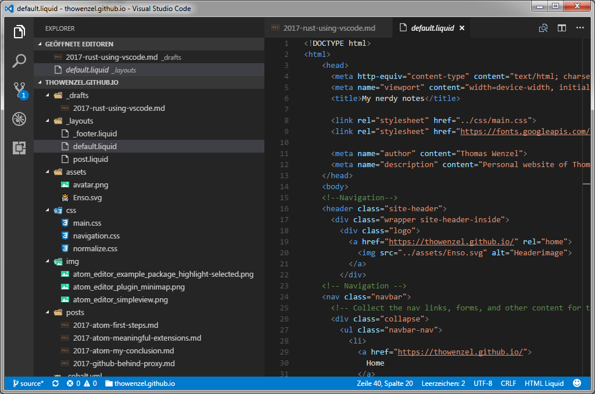

Rust und Visual Studio Code Veröffentlicht am 06.04.2017 - tags: rust, vscode Wie in einem älteren Beitrag angekündigt habe, nutze ich inzwischen Visual Studio Code. Visual Studio Code ist ein unter der MIT-Lizenz stehender Quelltext-Editor von Microsoft. Er ist für die Betriebssysteme Windows, MacOS und Linux verfügbar. Technologisch basiert Visual Studio Code auf Electron (Framework) und ermöglicht auch Debugging, IntelliSense und Versionsverwaltung.  Warum ich umgestiegen bin, das habe ich ja in einem älteren Blogbeitrag schon beschrieben. Inzwischen kann ich sagen: Visual Studio Code rockt! Extensions VSCode lässt sich über das Installieren von Extensions sehr gut an die eigenen Bedürfnisse anpassen. VSCode installieren und für Rust anpassen Ich arbeite momentan auf einem Windows-System, daher weichen die nachfolgenden Schritte auf Linux- oder Mac-Systemen ggf. leicht ab. VSCode ist schnell installiert, dazu einfach auf der Seite https://code.visualstudio.com/ den passenden Installer wählen und los. VSCode unterstützt das Highlighting von Rust-Syntax von Haus aus. Um aber einigermaßen produktiv arbeiten zu können, erwarte ich von einem Editor natürlich noch etwas mehr. Das Compilieren, Ausführen und Testen von Rust-Code soll möglich sein. Ich habe daher Rust installiert, diese erweitert die Sprachunterstützung für Rust in VSCode erheblich. Die Erweiterung kann durch Auswahl des unteren Buttons in der Seitenleiste und der Suche nach 'Rust' installiert werden. Nach der Installation lassen sich die Cargo-Kommandos, wie z.B. build, test, run, direkt in VSCode ausführen (Befehlspalette mit Ctrl+Shift+P öffnen, die Befehle beginnen alle mit Cargo: ). Alternativ lässt sich cargo natürlich auch über das integrierte Terminal bedienen. The Erweiterung Rust besitzt zwar eine experimentelle Unterstützung für den Rust Language Server, aber richtig gut funktioniert das noch nicht. Daher aktivieren wir noch den legacy mode von racer in the Einstellungen von VSCode. Die Einstellungen werden von VSCode in einer JSON-Datei gespeichert und müssen auch in dieser bearbeitet werden. Dazu Datei > Einstellungen > Einstellungen aufrufen (oder Ctrl + Komma klicken). Es öffnet sich die Datei settings.json. Auf der rechten Seite können die Benutzerdefinierten Einstellungen eingetragen werden. Dort folgende Einstellungen vornehmen: { "editor.formatOnSave": true, "editor.rulers": [80], "files.trimTrailingWhitespace": true, "rust.actionOnSave": "check", "rust.forceLegacyMode": true, "workbench.iconTheme": "vscode-icons" } Weiterführende Links: Setting up a Rust Development Environment Rust Using Visual Studio Code Using Visual Studio Code for Rust on Ubuntu Debugging Rust on Windows using Visual Studio Code Best of Visual Studio Code: Features, Plugins, Acting Like Atom and Sublime Visual Studio Code Features Part 1 Visual Studio Code Features Part 2